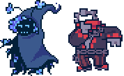
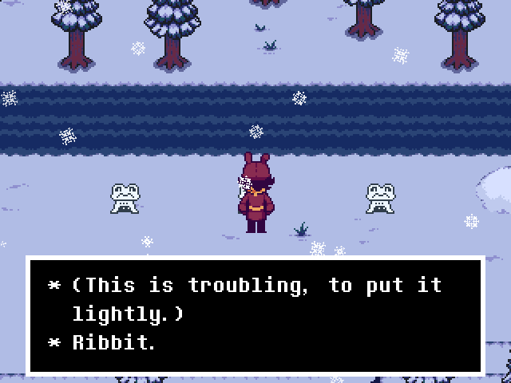
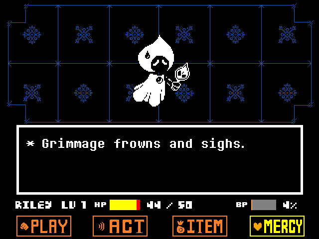
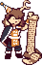
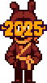

NEWSLETTER
Issue 2 (Anniversary)
Happy new year!
Today marks the one-year anniversary of Undertale Wildfire's development. January 1st sure is an easy date to remember - the start of the year is the same day that Undertale Wildfire was initially conceptualized. We feel we've come a long way, and it feels good to see all the work we've done.
We're glad to see that people are enjoying our characters - we've seen people excitedly discuss our game, make fanart, and record playthroughs of our Combat Demo. We put a lot of work into it, so seeing people stream themselves playing it and even speedrunning the challenges has been delightful.
Now... I'm sure you're just thinking, "Okay, unspecified Undertale Wildfire developer, that's cool and all, but how's development been going?"
And to you, random inquirer, I shall provide an answer!
PROGRESS!

Snowdown, the first area of the game, is still underway. Our artists, writers, composers, and programmers are all making an even pace toward a finished product, and our workflow has been smoothly ironed out and streamlined compared to the first few chaotic months of development.
It's been quite the learning process... but we're getting there!
All of the rooms for the first of Snowdown's two subareas, the Trail, are fully tiled and in the process of being implemented. There are a few cutscenes and battles that still need spritework done, but all of the concepts for the Trail are complete. We're now starting to work on filling these rooms with lots of interesting things.
Some NPCs have been written...

The puzzles are in progress...

And a few of the basic encounters are finished, as well.

Grimmage isn't actually in the Trail... but this attack looks super cool, doesn't it?!
Our musicians have also been working hard! Here's one of the new tracks you'll hear in the Trail - see if you can recognize the melody:
♪ Dance on Delay (Evan James)
So, that's where progress stands for Snowdown right now. The rest of Snowdown's rooms are already conceptualized, and the Forest is currently on the tiling block. Essentially, we're just putting all of our ideas into a tangible form.
ALL THE REST

Writing-wise, we have a few things left we're fine-tuning in Snowdown. This includes tasks like looking over and editing cutscene dialogue, figuring out bits of flavor text here and there, workshopping our jokes (please take the microphone away from Beemo), and getting non-plot related NPCs designed.
Since everything major is done regarding Snowdown, we've also made some decent headway into the game's next area. We've got the room layout for its first subarea finished, concept art for how we want it to be tiled and colored, the important characters fleshed out, and so on.
Ah, you want something a little more specific...? I suppose we can give a tiny tease. The random encounter monster designs for the next area past Snowdown have been workshopped and finalized. We think they look pretty neat, and we're looking forward to nailing down their bullet patterns and flavor text soon.
Well, there you have it - things are happening, and our workflow has improved as we've learned what works best with our team. There were various rough patches throughout the year, but we've finished fooling and found our footing, as they say!
(... nobody says that...)
CONCLUSION
Thank you very much for reading once again! We're just as antsy as you are for a release date, and we hope that these little teasers can help hold you over until then.
Our passion for making Undertale Wildfire burns stronger and stronger with each passing day...
Like a Wildfire!
Wow!!!
